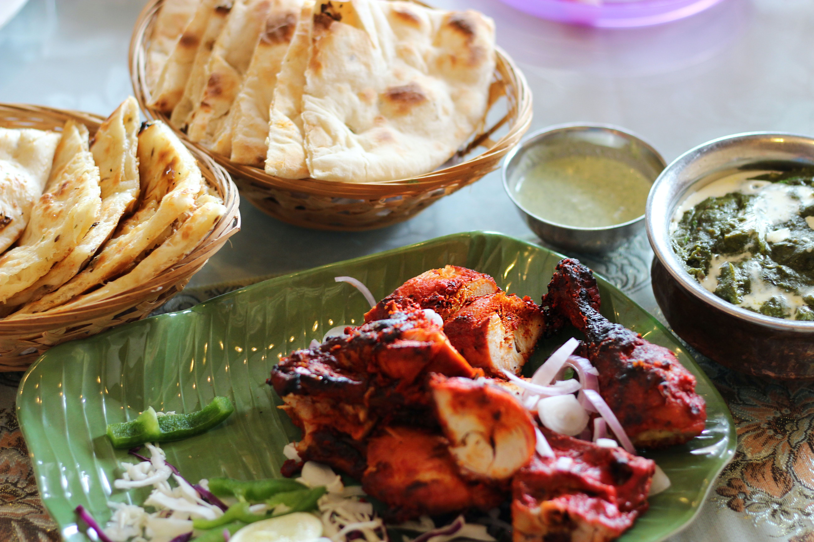

Tandoori Chicken

Description
Tandoori chicken is a chicken dish prepared by roasting chicken marinated in yoghurt and spices in a tandoor, a cylindrical clay oven. The dish originated from the Indian subcontinent and is popular in many other parts of the world. You can make this tandoori chicken in an oven or on the stovetop, but cooking directly on the fire will yield the best results. This recipe will show you how to cook it in the oven. You can use store-bought or ready-made tandoori masala, but this recipe will show you how to make the masala from scratch.
Ingredients
- 500g chicken
- 1/2 cup Greek yoghurt
- 3/4 tablespoon ginger-garlic paste
- 1 teaspoon garam masala
- 1 teaspoon red chilli powder (Kashmiri or any low-heat chilli)
- 1/4 teaspoon crushed black pepper
- 1 teaspoon coriander powder
- 1/4 teaspoon salt
- 1/4 teaspoon turmeric
- 1 teaspoon kasuri methi (dried fenugreek leaves)
- 1 tablespoon lemon juice
- 1 1/2 tablespoon oil (preferably mustard oil)
For grilling
For colour
- 1 teaspoon red chilli powder
- 1 to 2 tablespoons oil (preferably mustard oil)
Steps
Marinade for tandoori chicken
- To a mixing bowl, add Greek yoghurt.
- Next, add in ginger-garlic paste, garam masala, red chilli powder, salt, turmeric, kasuri methi, black pepper powder, and coriander powder.
- Add mustard oil and lemon juice.
- Mix everything well. The marinade has to be thick and not dripping. Taste it and add more salt and chilli powder if needed.
- Make deep gashes over the chicken and add it to the bowl.
- Marinate the chicken well into the gashes.
- Cover and set aside for at least 6 hours. If you reduce the marination time, the chicken will not turn soft and juicy. It may not cook well if making on a tawa.
Cooking instructions
- Preheat the oven to the highest setting for at least 15 to 20 minutes. For my oven, this is 240 degrees Celsius or 470 degrees Fahrenheit.
- Place foil on an oven tray and then a greased wire rack on top of it.
- Place the chicken pieces over the wire rack.
- Grill the chicken for about 15 minutes.
- If you'd like your chicken spicy, mix together 1 tablespoon of red chilli powder with 1 tablespoon of mustard oil. After 15 minutes of grilling, baste the chicken with the red chilli-oil mix. You can also baste the leftover marinade over the chicken.
- Turn the chicken to the other side and baste with the red chilli oil or marinade.
- Grill for another 6 to 10 minutes or until the chicken is cooked through. You may need to adjust the cooking time based on the size of the chicken pieces.
- For the last 5 minutes, set your oven to broil mode. Alternatively, you can move the entire tray with the wire rack to the top-most rack for the last 5 minutes. This helps to char the chicken.
- Brush the drippings all over the chicken. This keeps the chicken moist. You can also burn a charcoal piece and place it in a small cup. Take the tray from the oven and place the cup of charcoal in the tray. Cover with a large bowl or foil. Allow it to smoke for 5 to 7 minutes.
- Serve with onion and lemon wedges.